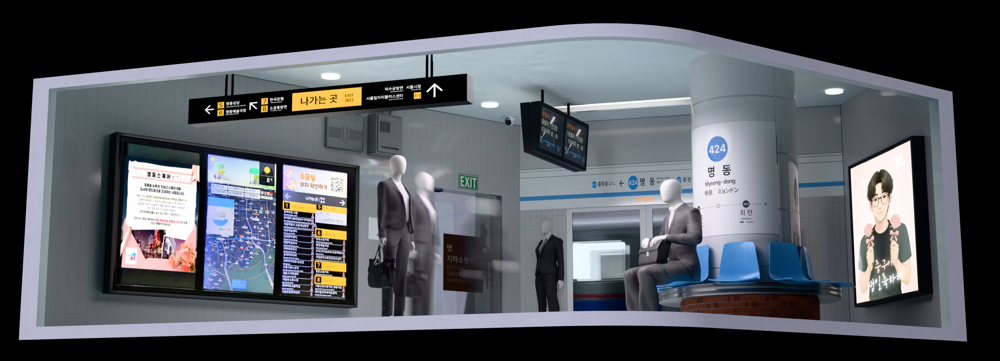
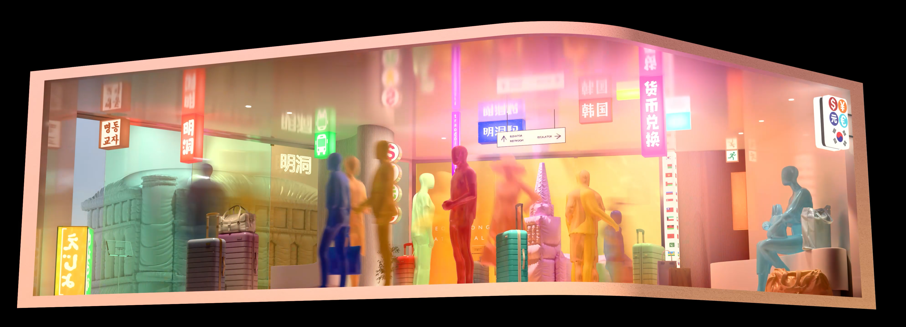
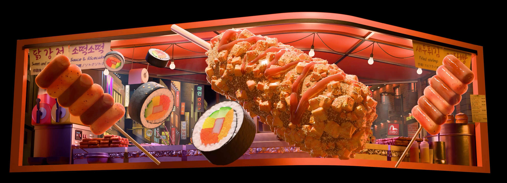

DADA Myeongdong was developed for the large public media wall at Shinsegae in Seoul. Rather than illustrate the district literally, the moving-image work recomposes its morning, night, and dawn into successive visual atmospheres.
Passing viewers encounter a changing window of the city: movement becomes color and afterimage; the nighttime sequence draws on the signs, food, and energy of Myeongdong.
I directed and created the media artwork, developing the site's visual structure, pace, transitions, and screen-scale presentation within the Art Korea Lab incubation program.
The work had to read from a public street rather than from a cinema seat. I used broad shifts in motion and light to establish narrative progression at architectural scale.


